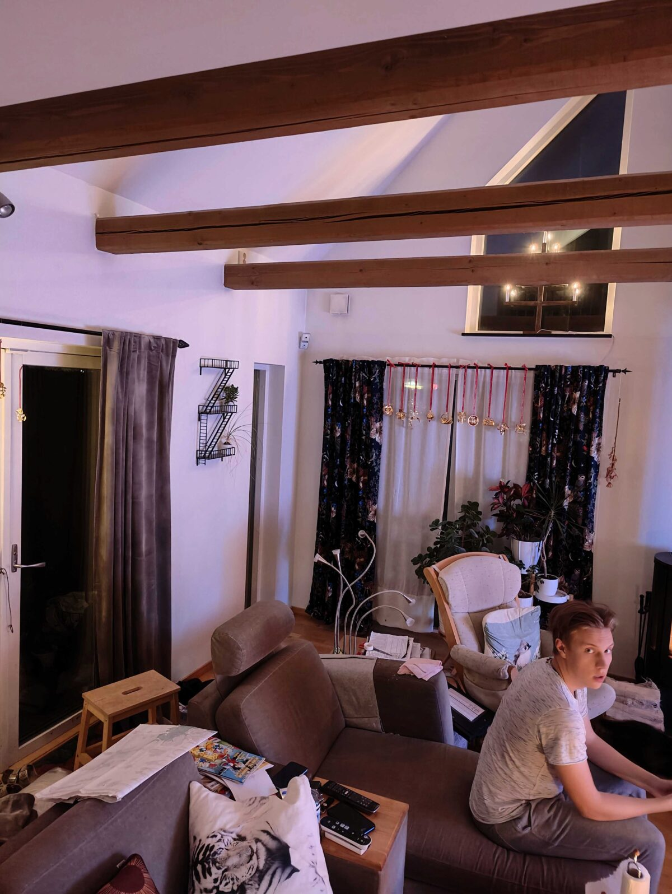
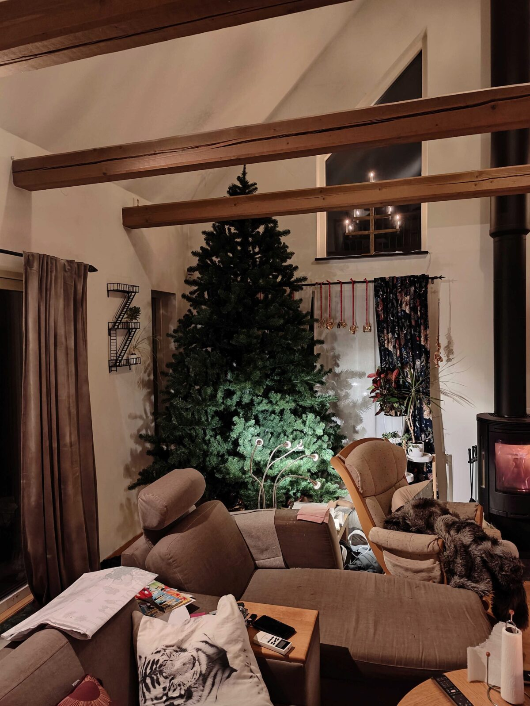
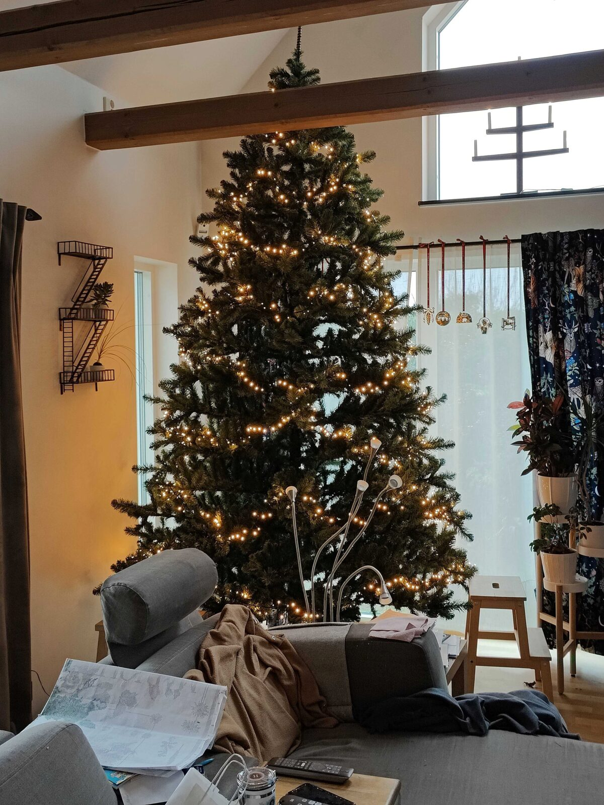
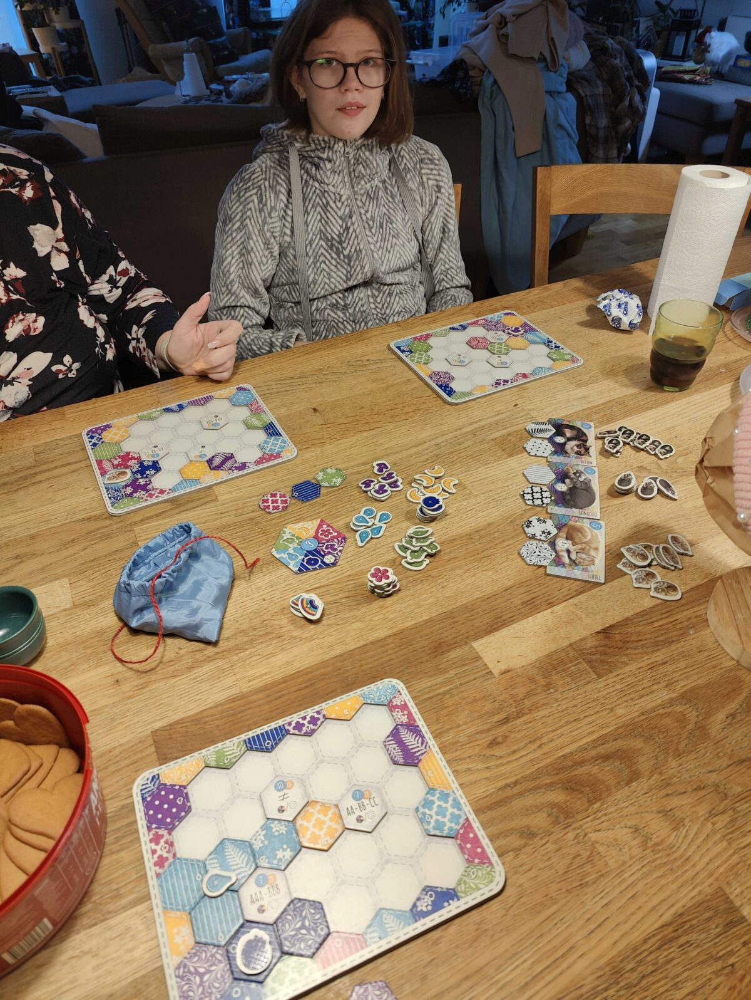
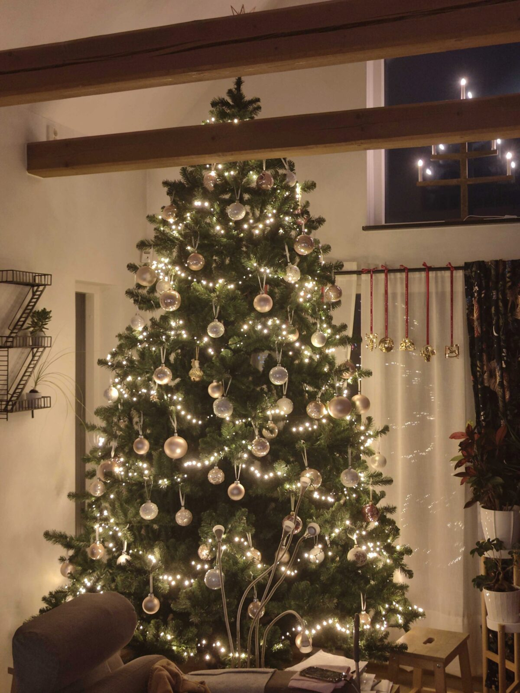
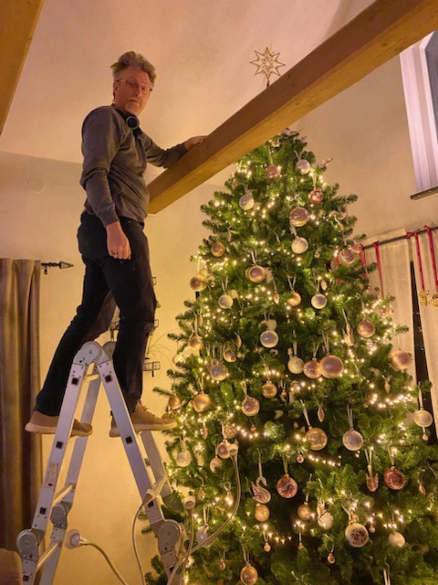
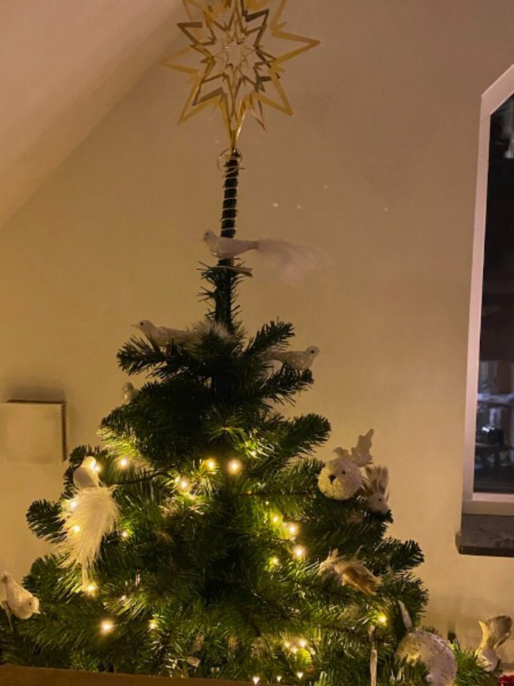
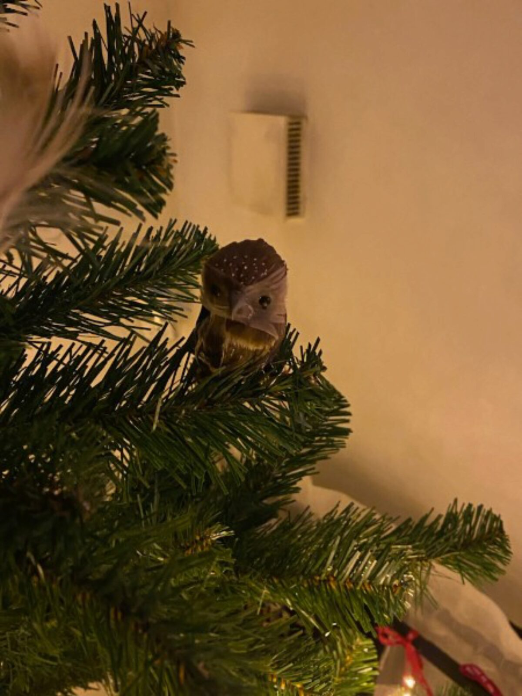
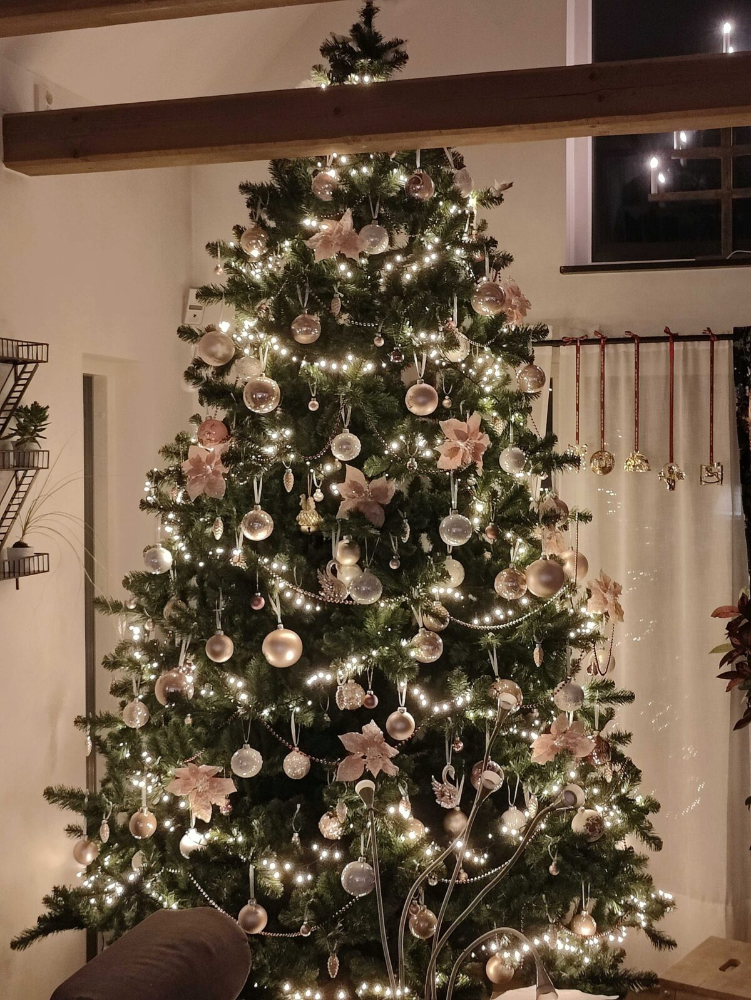

Rudolf blir ren-t yr

Ha en bra måndag!
Nu har det hänt saker
på Lokegatan må ni tro
I lördags fanns där ingen gran alls
bara lite julpynt i fönstren
Men sedan swishade det till
när barnen hjälptes åt
medan kaminen spred värme
och vips stod där en gran
Den såg dock inte mycket ut för världen
Men söndagen fylldes
med granpyntande
Först ljusslingan
med de ett tusen ljusen
Sedan en brädspelspaus
Vi spelade Calico
Sen blev det julkulor
för hela slanten
Men jösses, vad gör M så högt upp i luften
Rudolf blir ren-t yr
(Det är nog därför han aldrig var
särskilt bra på att dra släden)
Det är ju för att pippisarna
bor högst upp i granen
Och den lilla ugglan
Så här fin blev granen till slut
Förresten så var
chokladen i lördags
Gissade ni på det?